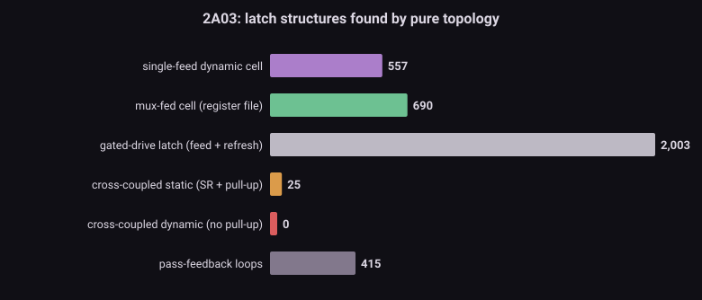
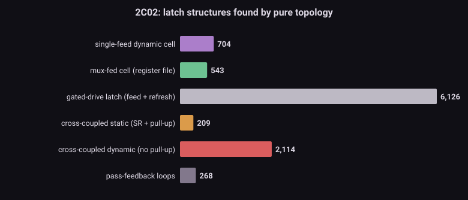
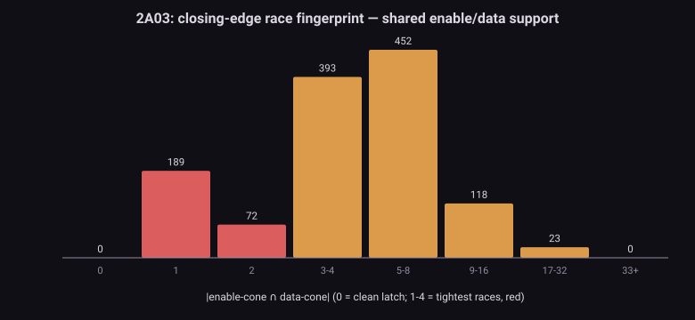
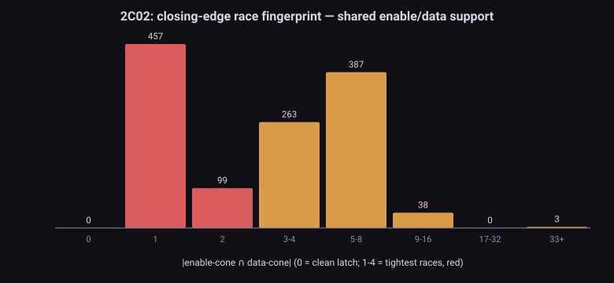
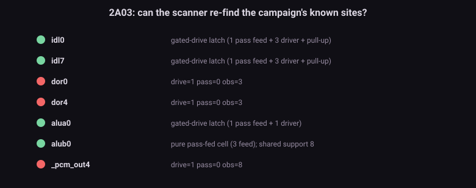
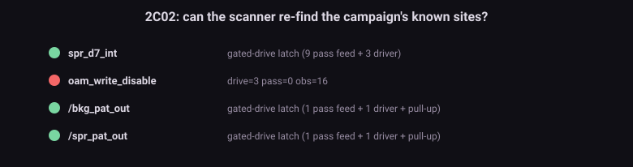

The problem問題 Eight shims, one physics八顆 shim,一種物理
A transparent latch follows its input while the enable is high and holds on the closing edge. In zero-delay settling, "the closing edge" and "the data changing" collapse into the same instant — so every race resolves by graph accident instead of physics. The campaigns paid for this eight times: DL (φ2 transparency at $4016/7), DmcLatch (data vs closing clock), Dmc4015Abort, FrameIrq (a settle-internal pulse caught by an RS pair), Dbl2007, OamDmaPpuBus — and, as of this morning's retirement experiments, the transient halves of OpenBus (a DOR precharge pulse escaping through an open pad driver) and OamBlankEdge (a rendering-disable edge writing $FF into OAM cells). The M2 census proved those last two are not arbitration problems: the fights happen while a driver is conducting, at sub-settle granularity. Every arrow points here.
透明閂鎖在致能高時跟隨輸入、在關門沿保持。零延遲收斂裡,「關門沿」和「資料改變」塌縮成同一瞬間 —— 所以每場賽跑都由圖的偶然決定,不由物理決定。戰役為此付了八次學費:DL($4016/7 的 φ2 透明)、DmcLatch(資料 vs 關門時脈)、Dmc4015Abort、FrameIrq(settle 內脈衝被 RS 對咬住)、Dbl2007、OamDmaPpuBus —— 以及今晨試拔實驗剛定讞的:OpenBus 的瞬態半邊(DOR precharge 脈衝經敞開的 pad 驅動洩出)與 OamBlankEdge(關渲染邊沿把 $FF 寫進 OAM cell)。M2 普查證明了後兩者不是裁決問題:打架發生時有驅動器在導通,粒度在 settle 之內。所有箭頭都指向這裡。
The method方法 Four fingerprints, zero priors四個指紋,零先驗
This is the purest census in the toolbox: no layer weights, no era constants, no calibration — connectivity only.
這是工具箱裡最純的一次普查:沒有層權重、沒有時代常數、沒有校準 —— 只有連接性。
- 1 · Pure pass-fed cell — observers but no rail driver and no pull-up; fed only through signal-to-signal pass devices. Holds by charge alone (the pcm/OAM style). Single-feed = classic latch; multi-feed = mux/register-file cell.
- 1 · 純 pass 饋入 cell —— 有觀察者、無電源軌驅動、無上拉;只靠訊號對訊號的 pass 器件餵。純靠電荷保持(pcm/OAM 型)。單饋 = 經典閂鎖;多饋 = 多工/暫存器檔 cell。
- 2 · Gated-drive latch — a pass feed plus refresh sources (drivers or a pull-up): the DL/ALU style. A pull-up is just another refresh source — the DL bits taught the scanner that.
- 2 · 帶驅動閂鎖 —— pass 饋入加上刷新源(驅動器或上拉):DL/ALU 型。上拉就是另一種刷新源 —— 這課是 DL 位元教會掃描器的。
- 3 · Cross-coupled pair — node a gates a pull-down of b and vice versa. With a pull-up: static SR. Without: a dynamic regenerative cell — charge-refreshed, glitch-vulnerable.
- 3 · 交叉耦合對 —— a 閘控 b 的下拉、b 也閘控 a 的下拉。帶上拉:靜態 SR。不帶:動態再生 cell —— 靠電荷刷新、怕毛刺。
- 4 · The closing-edge race (P1) — bounded fan-in cones (depth 2) of each cell's enable and data: shared support means one trigger can close the gate and change the data in the same wave. Clock-class nodes (fanout > 200) excluded as trivial.
- 4 · 關門沿賽跑(P1) —— 每個 cell 的 enable 與 data 各取有界 fan-in 錐(深度 2):共享支撐 = 同一個觸發能在同一波裡既關門又改資料。時脈級節點(扇出 > 200)當平凡交集排除。
Results結果 11,379 latches — and the OAM array, found by accident11,379 個閂鎖 —— 以及被順手點名的 OAM 陣列
| 2A03 (CPU+APU) | 2C02 (PPU) | |
|---|---|---|
| pure pass-fed cells (single / mux)純 pass 饋入 cell(單饋 / 多工) | 1,247 (557 / 690) | 1,247 (704 / 543) |
| gated-drive latches (feed + refresh)帶驅動閂鎖(饋入 + 刷新) | 2,003 | 6,126 |
| cross-coupled static (SR + pull-up)交叉耦合靜態(SR + 上拉) | 25 | 209 |
| cross-coupled dynamic (no pull-up)交叉耦合動態(無上拉) | 0 | 2,114 |
| tight closing-edge races (shared support 1–4)緊湊關門賽跑(共享支撐 1–4) | 654 | 819 |
| pass-feedback loopspass 回授環 | 415 | 268 |
- The OAM array announces itself. The 2C02 carries 2,114 pull-up-less cross-coupled cells; the 2A03 carries zero. That population is the PPU's OAM (64 sprites × 4 bytes × 8 bits ≈ 2,048, plus secondary OAM) — the exact no-pull-up, refresh-by-read, glitch-vulnerable cells the OamBlankEdge shim defends. The scanner had no idea what OAM is; the structure alone drew its outline.
- OAM 陣列自報家門。2C02 有 2,114 個無上拉交叉耦合 cell;2A03 有零個。那批人口就是 PPU 的 OAM(64 sprite × 4 bytes × 8 bits ≈ 2,048,加二級 OAM)—— 正是 OamBlankEdge shim 防守的那種無上拉、讀取即刷新、怕毛刺的 cell。掃描器不知道 OAM 是什麼;結構自己畫出了它的輪廓。
- Ground truth: 8 of 11 known sites re-found, and all three misses are correct class boundaries, not failures —
dor0/4and_pcm_out4are driven register outputs (the latch lives upstream),oam_write_disableis control logic, not storage (a correct rejection). - Ground truth:11 個已知站點重新找到 8 個,三個漏抓全是正確的類別邊界、不是失敗 ——
dor0/4與_pcm_out4是被驅動的暫存器輸出(閂鎖在上游),oam_write_disable是控制邏輯不是儲存(正確拒收)。 - Named catches:
idl0/idl7(the DL bits: 1 pass feed + 3 drivers + pull-up — the gated-drive class was carved for them),alua0(gated),alub0(pure 3-feed mux cell, shared support 8 — the ALU race, fingerprinted),spr_d7_int(9-feed mux — also M2's top flip site),/bkg_pat_outand/spr_pat_out(gated latches — the same nodes M2's capacitance census flagged, now identified structurally). - 具名捕獲:
idl0/idl7(DL 位元:1 pass 饋入 + 3 驅動 + 上拉 —— 帶驅動類就是為它們刻的)、alua0(帶驅動)、alub0(純 3 饋多工 cell,共享支撐 8 —— ALU 賽跑,指紋到手)、spr_d7_int(9 饋多工 —— 也是 M2 的頭號翻盤點)、/bkg_pat_out與/spr_pat_out(帶驅動閂鎖 —— M2 電容普查點名過的同一批節點,現在有了結構身分)。






So what所以呢 The retirement road now runs through here退役之路現在從這裡走
- The mechanism has a proven prototype. Each of the six latch shims is a hand-written edge-capture; the M4 mechanism is one generic edge-capture primitive consuming annotations — the shim-chain pattern the hot path already tolerates at zero measured cost.
- 機制有已證明的原型。六顆閂鎖 shim 每顆都是手寫的關門沿捕捉;M4 機制是一個吃標註的通用 edge-capture 原語 —— 熱路徑已實測零感的 shim 鏈模式。
- Race verdicts come from M3. Who wins a tight race = enable-path τ vs data-path τ — the Elmore binner's job. The toolbox pipeline extends one more stage: M1+M2 → M3 → per-site race verdicts for M4's annotations. Sites the τ comparison can't settle keep measured verdicts as data (the L3 layer), not code.
- 賽跑判決交給 M3。緊湊賽跑誰贏 = enable 路徑 τ vs data 路徑 τ —— 正是 Elmore 分級器的工作。工具箱管線再延一節:M1+M2 → M3 → M4 標註的逐站判決書。τ 比不出來的站點,實測判決當資料(L3 層)保留,不寫進程式。
- Glitch immunity is a latch property. The P6 transients (DOR pulse, blank edge) are sub-settle pulses caught by storage; the physical cure is hold-time / inertial delay at the annotated cells — an M4-primitive behavior parameterized by M3's τ, not a per-test patch. That is the honest route to retiring OpenBus and OamBlankEdge.
- 毛刺免疫是閂鎖的屬性。P6 瞬態(DOR 脈衝、關渲染邊沿)是被儲存元件咬住的次 settle 脈衝;物理解法是在被標註的 cell 上給 hold-time / 慣性延遲 —— 由 M3 的 τ 參數化的 M4 原語行為,不是逐測試補丁。這才是 OpenBus 與 OamBlankEdge 的誠實退役路線。
Update · 2026-07-18後續 · 2026-07-18 Attacking glitch immunity — what mechanized, and the honest wall攻毛刺免疫 —— 什麼機制化了,以及那道誠實的牆
The primitive grew a third verdict, Transparent: while the enable is in its transparent phase the cell tracks the settled data, overwriting a mid-settle capture glitch. That is inertial delay stated in binary — the settled value at the right phase beats the wrong-phase transient — and it is the principled cure for the DL input latch (transparent through φ2, but the netlist captures once and keeps whatever transient resolved that instant). It carries optional behavioral scoping (an address window + a divergence threshold), because the DL race is only the measured $4016/$4017 sites with a ≥2-bit capture signature.
原語長出第三種判決 Transparent:致能在透明相位時,cell 追隨 settled 資料,蓋掉 mid-settle 捕捉的毛刺。這就是二值化的慣性延遲 —— 對相位的 settled 值勝過錯相位的瞬態 —— 也是 DL 輸入閂鎖的原理解(它在 φ2 全程透明,但網表只捕捉一次、把那一刻解出來的瞬態留下)。它可帶行為 scoping(位址窗 + 分歧門檻),因為 DL 賽跑只發生在實測的 $4016/$4017 站點、且要 ≥2 位元的捕捉指紋。
Then the experiments spoke, and the result is a clean map of a boundary — three verdicts, three fates:
然後實驗說話了,結果是一張邊界的清楚地圖 —— 三種判決、三種命運:
| Shimshim | Verdict判決 | Experiment實驗 | Fate命運 |
|---|---|---|---|
| OpenBus (err1, last byte) | none — not a latch無 —— 不是閂鎖 | full M4 stack + no OpenBus shim → FAIL(1)M4 全 stack + 拔 OpenBus shim → FAIL(1) | hard boundary真邊界 |
| DL (err6, capture glitch) | Transparent | AC OpenBus and ppu_open_bus both PASS without itAC OpenBus 與 ppu_open_bus 拔掉都 PASS | undecidable in isolation孤立不可判 |
| OamBlankEdge | Hold | 4 arms all PASS, shim never fires in isolation四臂全 PASS、孤立零開火 | undecidable in isolation孤立不可判 |
- OpenBus's last byte is not glitch immunity — it is the external bus. The open-bus read returns the last byte transferred on the pins, held by the package/board bus capacitance. That is not a node inside either die, so no on-die mechanism — charge arbitration (M2), latch verdicts (M4), delay (M3) — can reach it. Proven: the full M4 stack with the behavioral replay removed still fails, and M2 capacitance arbitration failed the same test earlier. This byte belongs to a board-level bus model (the L3 data layer / M5 territory), and it is the cleanest example yet of a genuinely irreducible behavioral boundary — exactly the kind of falsifiable negative the whole project is built on.
- OpenBus 的 last byte 不是毛刺免疫 —— 是外部匯流排。open-bus 讀取回傳的是接腳上最後傳輸的位元組,由封裝/主機板的匯流排電容保持。那不是任一晶粒內部的節點,所以任何晶粒內機制 —— 電荷裁決(M2)、閂鎖判決(M4)、延遲(M3)—— 都碰不到它。實證:M4 全 stack 去掉行為重播仍失敗,先前 M2 電容裁決也敗在同一測試。這個位元組屬於板級匯流排模型(L3 資料層 / M5 地盤),而且是至今最乾淨的一個真正不可約的行為邊界 —— 正是整個專案賴以立足的那種可證偽負面。
- DL and OAM: the verdict mechanizes, but the isolated protocol cannot judge them. The Transparent and Hold verdicts express both faithfully — yet neither shim is load-bearing on any isolated ROM available (both OpenBus tests pass without DL; the blank-edge write only happens mid-suite). With no control that fails, there is nothing to prove a retirement against. Their verdict is ready in the primitive; their judgement waits for in-suite (snapshot-resume) or blargg evidence — the same decidability wall the OamBlankEdge experiment hit first.
- DL 與 OAM:判決可機制化,但孤立協定判不了它們。Transparent 與 Hold 判決都能忠實表達 —— 但兩顆 shim 在手上的任何孤立 ROM 都不承重(兩個 OpenBus 測試拔掉 DL 都過;關渲染邊沿的寫入只在套內發生)。沒有會失敗的對照組,就沒有東西可以證明退役。它們的判決已在原語裡就位;判決書要等套內(snapshot resume)或 blargg 證據 —— 正是 OamBlankEdge 實驗最先撞到的那道可判定性的牆。
- What this run banked: the Transparent primitive (opt-in
M4_DL, Gate A golden, safe on AC OpenBus), and a precisely-drawn boundary. No shim retired here — but a research fork's job is to find where the wall is, and this found it exactly. - 這一輪入帳的:Transparent 原語(opt-in
M4_DL、Gate A 金、對 AC OpenBus 安全),以及一條精確畫出的邊界。這裡沒有 shim 退役 —— 但研究分支的工作就是找出牆在哪,而這次剛好找準了。
Honest limits誠實極限 What this scan cannot say這次掃描說不了的事
- Cells, not registers. Driven register outputs (dor*, _pcm_out*) and control signals are outside the storage classes by design; their latches live upstream and are caught there.
- 找的是 cell,不是暫存器。被驅動的暫存器輸出(dor*、_pcm_out*)與控制訊號設計上不在儲存類;它們的閂鎖在上游,由上游被抓。
- Races are candidates. Shared support says a same-wave race can happen; whether it fires, and who should win, needs the dynamic step and M3's τ — 1,473 tight candidates is the watch-list, not a bug count.
- 賽跑是候選。共享支撐說同波賽跑可能發生;會不會開火、誰該贏,要動態步驟和 M3 的 τ —— 1,473 個緊湊候選是監視名單,不是 bug 數。
- Cone depth 2 is a lens, not the truth — deeper triggers exist; the depth trades discrimination against trivial-intersection noise (at depth 3, everything intersects).
- 錐深 2 是鏡頭,不是真相 —— 更深的觸發存在;深度是在鑑別力與平凡交集雜訊之間取捨(深度 3 時萬物相交)。